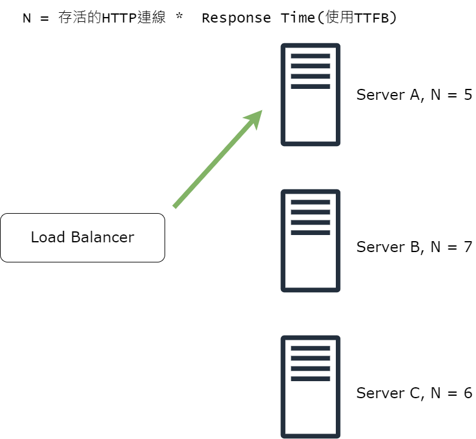

前言
現在也是個工作第二年的後端了，是時候該學一些系統設計的知識
系統設計顧名思義是指設計軟體系統的過程，例如說我們要設計一個大型社交網站
那我們可能就會需要非常非常多的技術，包含：用什麼語言去寫Server、使用什麼樣的Database、如果說系統Loading太大該怎麼辦等等，族繁不及備載。
要考量的點實在太多了，而且也沒有所謂的正確答案，端看能不能有效解決問題
能夠利用手上會的知識，去整合並且設計系統
另外面試的時候不會要你真的設計一個超級完整的系統，每個細節都要做到
不會，因為時間不夠，而且要你在臨場想出來也是強人所難，別人花了好幾次會議好幾個月甚至好幾年才構思出來的系統，要你在45~60分鐘內想出來，屬實過分。
所以我們在面試的時候必須持續溝通，詢問面試官說，這邊的需求，你想怎麼做等等。
系統設計面試都是開放式的問題，沒有標準答案，所以要慢慢限縮問題的範圍，而且實際面對需求或客戶，本來也就是這樣，每個人的認知都不同，你的大跟我的大應該是不同的。這時候如果沒有釐清需求，直接給他做下去，相信我87%痛苦的都是自己。
好了，我們先來介紹什麼是Load Balancer吧
什麼是Load Balancer
負責分散每個 Server 或是 Service 的壓力，就是 Load Balancer 的工作
假設今天我們有三台 Server(A, B, C)， Load Balancer 的工作就必須要把流量平均分布到各個Server上
避免流量過度集中在某個 Server 而過度爆掉
你可以想像，Server 是員工，Load Balancer就像是我們的主管一樣，負責把每個任務每個任務平均分配到每個人手上(如果你的主管沒有，那我也沒辦法🌚)
常見的 Public Rule
Least Connection Method: 就是我們剛剛說的平均分配每個流量給不同的Server的方式
Least Response Time Method: 分配給沒有那麼多用戶端連結的Server，並且那個Server的回應時間是最短的
圖片
Least Bandwidth Method: 把流量分到目前每秒頻寬(MB)最小的Server
Round Robin Method: 按照順序分，如果 Server 掛了就跳過，適用於硬體配備相差不多的 Server 上
- IP Hash: 按照使用者的 IP 去分
Redundant Load Balancer
防止 Load Balancer 掛了還有另一個 Load Balancer 可以用
聲明
本人只是將學習 Load Balancer 的過程記錄下來，並且整合成一篇筆記
如有侵權煩請告知
This writings just record the swift install process. If infringement, please be informed.